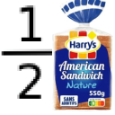

This is my portfolio, and i make cool stuff.

This is my portfolio, and i make cool stuff.
Hello!
My name name is [REDACTED], and my username is half bread (obviously)
I'm a high school dumbass, uhhhh, prodegy; who really enjoys playing video games, making video games,
and is interested in fields such as:
I'm really, unbelievably, absolutely passionate about making video games alongside my friend "the bread" (i'm the original one FYI), and in the current process of making little tech demos to kinda... get the gist of things i'd say :]
And i'm also soon going to form an indie duo with my sister!!!
"Why?" you might be asking like the naïve little child you are.
Well for the video game part pretty much like every game developer; I just got the luxury of being exposed to video games and relative forms of media at a young age, and grew insanely obsessed.
And for the music part, well, uhhhhhh, we're just overly addicted to music -.-
My sister can sing, and i can play guitar + mixing. So good enough ig...
I am currently actively working on the project Mesocyclone (very cool game btw you should def check it out).
however i have also worked on a notable amount of projects such as:
Here is my "Game Gollection" of all the games that i am interested in and really enjoy playing:
Here are all of my following links, both personal and Bread Productions: